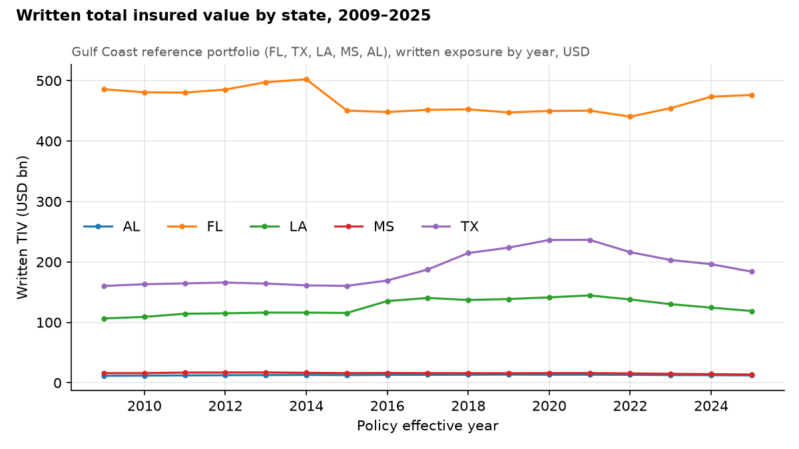
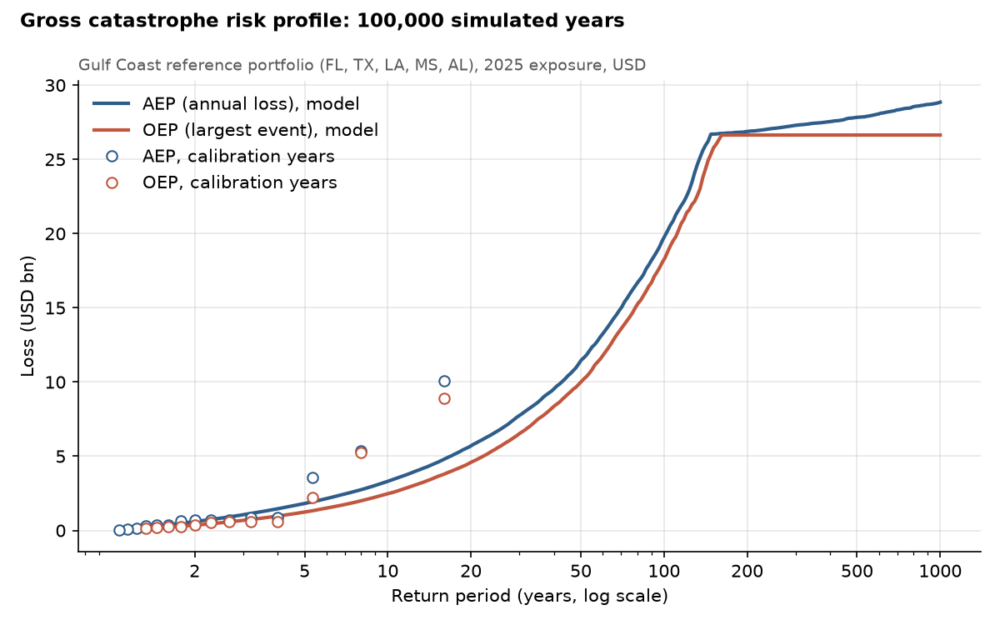
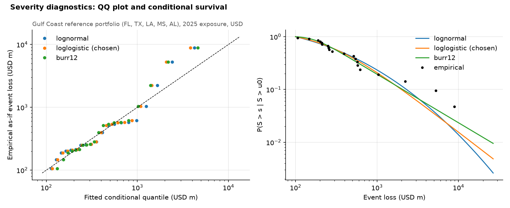
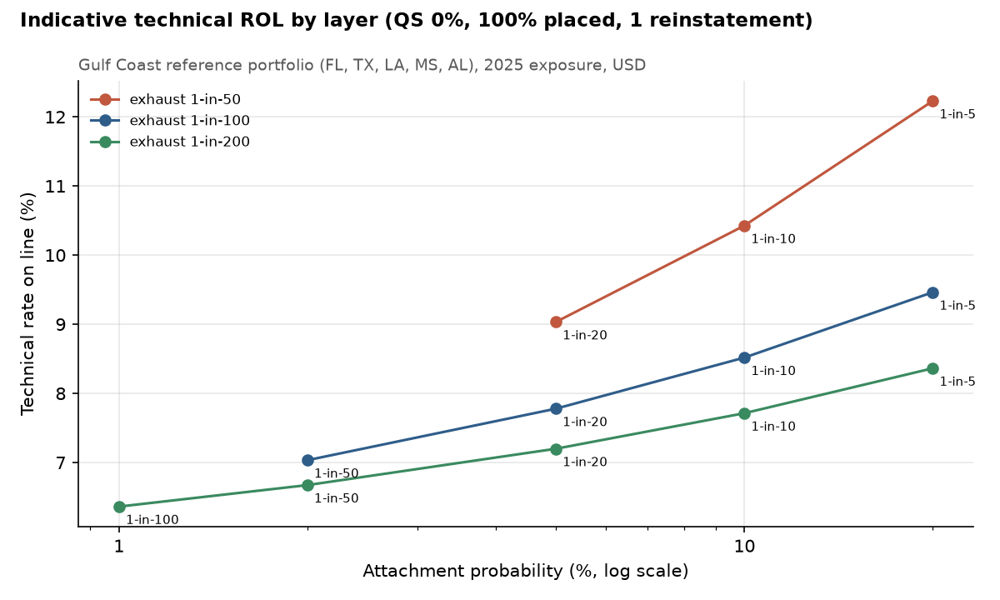
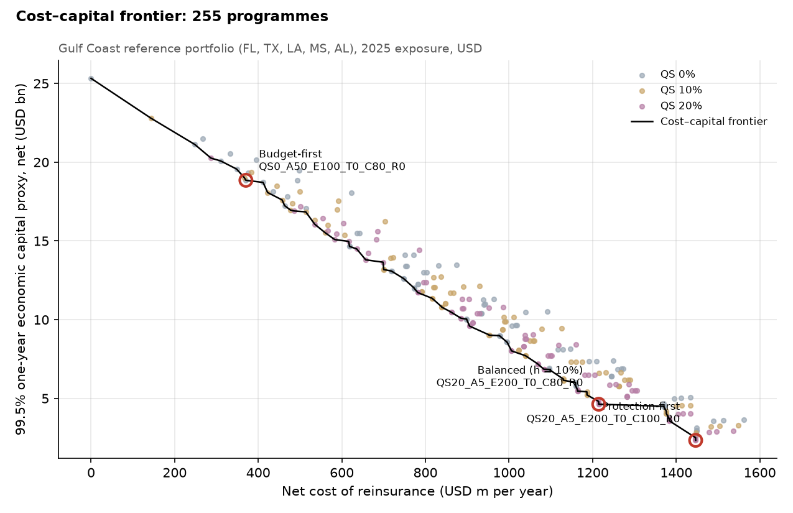
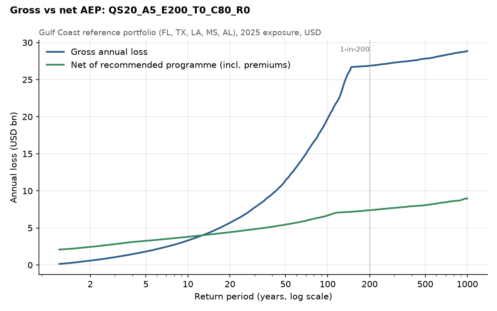
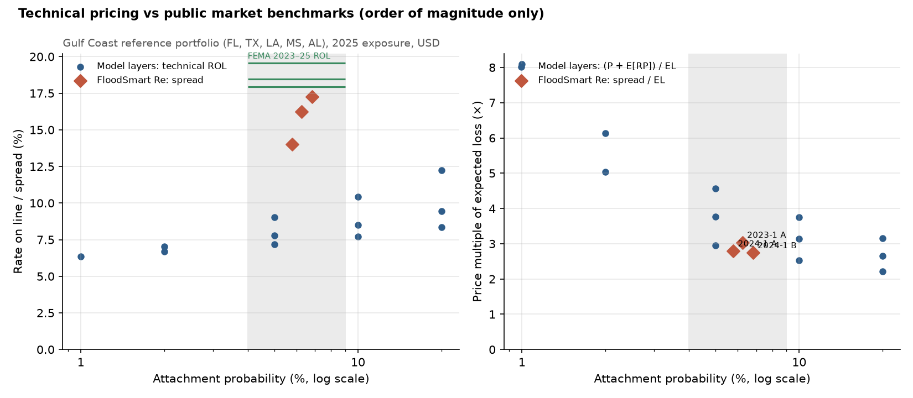

Reinsurance & catastrophe project · Tom Zhang · Python, Excel
Flood Catastrophe Reinsurance & Capital Optimisation
For a flood insurer exposed to catastrophe accumulation, what reinsurance programme should it buy, how much should it pay, and how much tail risk and economic capital does that programme remove?
A stylised Gulf Coast flood portfolio (FL, TX, LA, MS, AL) built from public NFIP claims and policy data. Historical flood events from 2009–2023 are restated to 2025 exposure and turned into a stochastic loss model of 100,000 simulated years; 255 quota-share and catastrophe excess-of-loss programmes are priced on a technical basis and compared on net cost against the 99.5% one-year economic capital proxy they release.
Answer. Buy 20% quota share + 1-in-5 to 1-in-200 Cat XoL, 80% placed, no reinstatement. It releases 81.7% of the 99.5% one-year economic capital proxy (USD 20,694m) for a net cost of USD 1,215m a year: an implied cost of capital of 5.9%, below the 10% hurdle.
The case rests on the reinsurer's diversification: with none, the implied cost rises to 11.5% and the same rule picks no reinsurance.
Stylised portfolio, indicative prices. Real inputs: OpenFEMA NFIP Redacted Claims and Policies (v3), public FEMA reinsurance placements and FloodSmart Re cat bond terms. The portfolio is calibrated to NFIP Gulf-state experience and does not reproduce the NFIP's finances. Prices are indicative technical premiums, not market quotes; economic capital is a 99.5% one-year proxy, not a Solvency II SCR.
What the model found
Six results, each written by the pipeline to outputs/.
Net economic capital falls from USD 25,325m to USD 4,631m. Premium USD 1,966m, expected recoveries USD 752m.
Every programme costs 5.7%–8.5% per unit of capital released, below the 10% hurdle, because the reinsurer charges 10% × 0.5 on its capital plus expenses.
At d = 1 reinsurance capital costs more than equity and the Balanced rule picks no reinsurance. Diversification is why reinsurance is worth buying at all.
The 1-in-200 tail rests on a few events: the year bootstrap puts the recommended programme's relief at 53%–82% (90% interval).
The exact contract held in 4 of 9 stress scenarios and its layer structure in 9 of 9; the others change only the placement share.
Comparable with FloodSmart Re cat bonds (2.7–3.0×); rates on line sit below FEMA's 18.5% mainly because the model's layers are wider.
From claims to a reinsurance decision
Portfolio and events
What are we buying reinsurance for, and which historical catastrophes hit it?
The 2025 Gulf Coast reference portfolio: 2,892,970 insured units, USD 805bn total insured value (59% in Florida) and USD 2,593m premium. Claims are grouped by FEMA's floodEvent label and each event is restated to 2025 by the ratio of state insured value; events of at least USD 100m form the catalogue (20 in 2009–2023), the rest is attritional loss (mean USD 142m a year).
| Event | Year | Nominal (USD m) | As-if 2025 (USD m) |
|---|---|---|---|
| Hurricane Harvey | 2017 | 9,056 | 8,880 |
| Hurricane Helene (holdout) | 2024 | 6,487 | 6,524 |
| Hurricane Ian | 2022 | 4,867 | 5,262 |
| Mid-summer severe storms | 2016 | 2,534 | 2,226 |
| Hurricane Milton (holdout) | 2024 | 1,211 | 1,218 |
| Hurricane Irma | 2017 | 986 | 1,039 |

Catastrophe loss model
How many catastrophes a year, how large, and what does a 1-in-200 year look like?
Annual loss = attritional + sum of event losses. Frequency: Poisson, 1.33 events a year (dispersion index 1.14). Severity: log-logistic fitted with left truncation at the event threshold, chosen by AIC after checking that each of the five largest events is unremarkable under the fit; each event is capped at 3× the largest calibration event. The 1-in-200 event sits at the event cap, so the far tail is an assumption, and is tested below.

| Return period | 5 | 10 | 20 | 50 | 100 | 200 | 250 |
|---|---|---|---|---|---|---|---|
| OEP (USD bn) | 1.2 | 2.5 | 4.6 | 10.0 | 18.2 | 26.6 | 26.6 |
| AEP (USD bn) | 1.8 | 3.3 | 5.7 | 11.4 | 19.7 | 26.9 | 27.1 |

Treaties and technical pricing
What does each layer recover, and what should the reinsurer charge?
Quota share inures to per-event Cat XoL. Layers are set by return period (attach 1-in-5, 10, 20 or 50; exhaust 1-in-50, 100, 200 or 250), as single layers or towers, placed 80% or 100%, with zero or one reinstatement. Premium = (modelled expected loss + 10% × 0.5 × the reinsurer's TVaR capital) ÷ (1 − 10% expenses), with expected reinstatement premium counted as income.
| Layer | USD m | AP | Years hit | Burning cost | Modelled EL | Premium | ROL | Multiple |
|---|---|---|---|---|---|---|---|---|
| 1-in-5 to 1-in-50 | 1,240–10,000 | 20.0% | 3 | 843 | 510 | 1,071 | 12.2% | 2.2× |
| 1-in-5 to 1-in-100 | 1,240–18,220 | 20.0% | 3 | 843 | 626 | 1,607 | 9.5% | 2.7× |
| 1-in-5 to 1-in-200 | 1,240–26,640 | 20.0% | 3 | 843 | 693 | 2,124 | 8.4% | 3.1× |
| 1-in-10 to 1-in-50 | 2,480–10,000 | 10.0% | 2 | 612 | 323 | 784 | 10.4% | 2.5× |
| 1-in-10 to 1-in-100 | 2,480–18,220 | 10.0% | 2 | 612 | 440 | 1,341 | 8.5% | 3.1× |
| 1-in-10 to 1-in-200 | 2,480–26,640 | 10.0% | 2 | 612 | 507 | 1,863 | 7.7% | 3.8× |
| 1-in-20 to 1-in-50 | 4,590–10,000 | 5.0% | 2 | 331 | 170 | 489 | 9.0% | 3.0× |
| 1-in-20 to 1-in-100 | 4,590–18,220 | 5.0% | 2 | 331 | 287 | 1,060 | 7.8% | 3.8× |
| 1-in-20 to 1-in-200 | 4,590–26,640 | 5.0% | 2 | 331 | 353 | 1,587 | 7.2% | 4.6× |
| 1-in-50 to 1-in-100 | 10,000–18,220 | 2.0% | 0 | 0 | 116 | 578 | 7.0% | 5.0× |
| 1-in-50 to 1-in-200 | 10,000–26,640 | 2.0% | 0 | 0 | 183 | 1,110 | 6.7% | 6.1× |
| 1-in-100 to 1-in-200 | 18,220–26,640 | 1.0% | 0 | 0 | 67 | 536 | 6.4% | 8.1× |

Capital and the programme decision
Which programmes are efficient, and which should management choose?
Net loss = gross − recoveries + premiums + reinstatement premiums. A fixed premium moves VaR and the mean equally, so capital relief comes only from tail recoveries. Net cost = premiums + expected reinstatement premiums − expected recoveries; implied cost of capital = net cost ÷ capital relief. 79 of 255 programmes are efficient.

| Choice | Programme | Net cost (USD m) | Net EC (USD m) | Relief | Implied CoC |
|---|---|---|---|---|---|
| Budget-first | 1-in-50 to 1-in-100 Cat XoL, 80% placed, no reinstatement | 370 | 18,852 | 25.6% | 5.7% |
| Balanced (h = 10%) | 20% quota share + 1-in-5 to 1-in-200 Cat XoL, 80% placed, no reinstatement | 1,215 | 4,631 | 81.7% | 5.9% |
| Protection-first | 20% quota share + 1-in-5 to 1-in-200 Cat XoL, 100% placed, no reinstatement | 1,447 | 2,338 | 90.8% | 6.3% |
Walking up the frontier
The Balanced rule stops before the first step whose marginal cost of capital exceeds the hurdle (8%: QS20_A5_E200_T0_C80_R0; 12%: QS20_A5_E200_T0_C100_R0). Equivalently it minimises net reinsurance cost + 10% × net capital: USD 1,678m against USD 2,532m with no reinsurance.
| Hull point | Net cost (USD m) | Net EC (USD bn) | Relief | Marginal CoC |
|---|---|---|---|---|
| no reinsurance | 0 | 25.3 | 0% | – |
| 20% quota share only | 287 | 20.3 | 20% | 5.7% |
| 20% quota share + 1-in-50 to 1-in-100 Cat XoL, 80% placed, no reinstatement | 583 | 15.1 | 40% | 5.7% |
| 20% quota share + 1-in-50 to 1-in-100 Cat XoL, 100% placed, no reinstatement | 657 | 13.8 | 46% | 5.8% |
| 20% quota share + 1-in-20 to 1-in-100 Cat XoL, 100% placed, no reinstatement | 905 | 9.6 | 62% | 5.9% |
| 20% quota share + 1-in-5 to 1-in-200 Cat XoL, 80% placed, no reinstatement | 1,215 | 4.6 | 82% | 6.2% |
| 20% quota share + 1-in-5 to 1-in-200 Cat XoL, 100% placed, no reinstatement | 1,447 | 2.3 | 91% | 10.1% |
Recommended programme
| Treaty | Attach (USD m) | Exhaust (USD m) | Return periods | AP | Share | Reinst. | Premium (USD m) | ROL | Multiple |
|---|---|---|---|---|---|---|---|---|---|
| Quota share 20% | – | – | all losses | – | 20% | – | 597 | – | – |
| Cat XoL 1 | 990 | 21,310 | 1-in-5 to 1-in-200 | 20.0% | 80% | 0 | 1,369 | 8.4% | 3.1× |

Validation, stresses and sensitivities
Would the recommendation survive a different view of the risk or the price?
- Convergence: gross VaR 99.5 moves 0.17% and the recommended relief 0.14% at 200,000 years.
- Temporal holdout: refitted on 2009–2018, the model expected 6.0 events in 2019–2023; 8 occurred (percentile 79%). Hurricane Ian was a 1-in-23 event under that model.
- Largest event removed: without Hurricane Harvey, gross capital falls to USD 10,783m and the Balanced choice becomes 20% quota share + 1-in-5 to 1-in-50 Cat XoL, 100% placed, no reinstatement.
- Year bootstrap (200 replicates): 90% intervals of 53%–82% for relief and 5.9%–11.0% for the implied cost of capital.
- Engine checks: golden values from a hand-worked toy example, treaty identities, and an Excel workbook in live formulas that matches Python in 86 cells (largest relative difference 4e-16).
| Scenario | Balanced choice | Same contract | Recommended: relief / CoC |
|---|---|---|---|
| Event frequency × 1.25 | QS20_A5_E200_T0_C80_R0 | yes | 81% / 6.0% |
| Event severity × 1.15 | QS20_A5_E200_T0_C100_R0 | placement only | 81% / 6.0% |
| Heavier tail (GPD above median, ξ + 0.1) | QS20_A5_E200_T0_C100_R0 | placement only | 79% / 6.2% |
| Reinsurer CoC 8% | QS20_A5_E200_T0_C100_R0 | placement only | 82% / 4.8% |
| Reinsurer CoC 12% | QS20_A5_E200_T0_C80_R0 | yes | 82% / 7.0% |
| Diversification d = 0.3 | QS20_A5_E200_T0_C100_R0 | placement only | 82% / 3.6% |
| Diversification d = 0.7 | QS20_A5_E200_T0_C80_R0 | yes | 82% / 8.1% |
| Cedent hurdle 8% | QS20_A5_E200_T0_C80_R0 | yes | 82% / 5.9% |
| Cedent hurdle 12% | QS20_A5_E200_T0_C100_R0 | placement only | 82% / 5.9% |
| Event threshold USD 250m | QS20_A5_E200_T0_C100_R0 | placement only | 81% / 6.0% |
| CPI-only as-if | QS20_A5_E200_T0_C100_R0 | placement only | 66% / 5.9% |
| Calibration from 2010 | QS20_A5_E200_T0_C80_R0 | yes | 82% / 5.9% |
| Lognormal attritional | QS20_A5_E200_T0_C80_R0 | yes | 82% / 5.9% |
| Lognormal severity | QS20_A5_E100_T0_C100_R0 | no | 79% / 7.0% |
| Event cap 5× largest event | QS0_A5_E200_T0_C100_R0 | no | 70% / 6.2% |
| No diversification (d = 1) | QS0_XS0 | no | 82% / 11.5% |
Market benchmark
Are the technical prices the right order of magnitude?

FEMA's traditional NFIP placements cost 18.0%, 19.5% and 18.5% rate on line in 2023–2025, attaching at USD 7bn nationally with 9%–26% shares. The model's layers at similar attachment probabilities price at 7.2%–9.0%, but as multiples of expected loss (2.8–4.6×) they sit with FloodSmart Re cat bonds (2.7–3.0×). The benchmarks cover the national NFIP (all floods for FEMA, named storms only for the cat bonds) and were never used to calibrate the model.
Limitations
What the model can and cannot say.
- Historical-event model, not a vendor catastrophe model: no hazard, hydraulics or vulnerability modules.
- 15 calibration years: the 1-in-200 tail rests on the severity family and the event cap. Pre-2009 events (Katrina, Ike) are excluded for lack of consistent exposure data.
- As-if restatement uses state-level insured value only; 2024–2025 are held out and 2024 is immature; events are FEMA labels, not a treaty hours clause.
- Attritional losses assumed independent of catastrophes; paid claims exclude loss adjustment expense.
- Prices use assumed cost of capital, diversification and expenses; economic capital covers this portfolio's insurance risk only.